前言
在行文开始前，我们要明确我们的目的，即问我们自己为什么要学习这个东西？将其拆开，无非是询问自己这几个问题：
- 对于一个任务，已我现在所掌握的知识和技能，能不能解决这个问题？
- 如果能解决，我当前的技能和知识高不高效？
如果我们不能基于我们现有的知识去解决它，那么当前的新知识、新技能就有值得学习的价值。
正文
要学习数据降维，我们首先知道自己干什么。在这篇文章中，我们的核心目的就是聚类，将一盘数据散沙根据它们的字段特征进行分类。我们举例一个简单的例子（例-1）：我们都喜欢根据考试成绩划分学生，为了简化，我们只考虑两门课程成绩：理科成绩（STEM）、文科成绩（LA）。我们根据他们的成绩进行散点图图绘制，因为只有两个字段维度，我们用一张二维图标就可以表示：
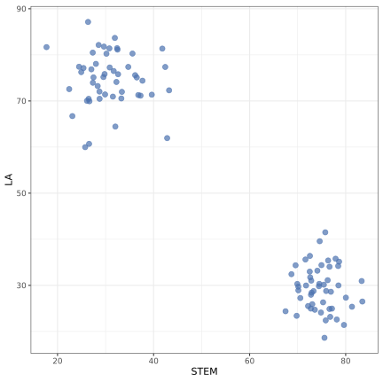
对于这种图，我们可以根据分布一眼就能学生分为这样的两个群体：理科生和文科生，因为这个数据表在二维分布特征太明显啦！我们根据我们的常识就可以将其分群。但是，我的目的是，在减少数据维度道一维时，我们也可以进行分辨。那么我们如何去降维呢？我们最先想到的就是投影：将二维数据投影到 X 坐标轴或 Y 坐标轴，它们依然呈现分群的特征，例如我们投影到 X 轴：
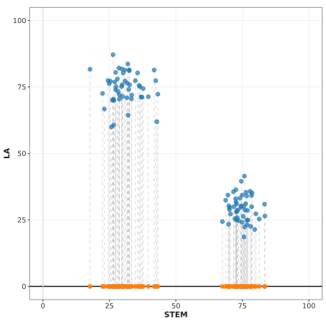
我们依然可以进行分群。
其实，PCA 的本质上就可以理解为多维数据在低维空间中的投影，在这个例子中，我们的高维数据是原始成绩，我们将其投影到一维的直线上，且保留了数据的原始分群信息。
注意！我们降维实际上是尽可能保留原始数据点的关系信息，而我们的原始分群信息也是数据点关系信息之间的一种。
我们继续来考虑二维信息的一维降维分析，如果我们的原始分群是这样的（例-2）：
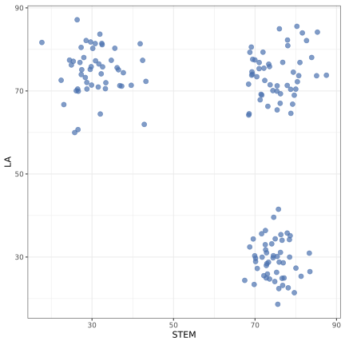
那么我们通过二维信息依然可以根据常识将其分为三类：理科生、文科生和全科生。但是，此时如果我们把二维原始信息投影到 X 轴或 Y 轴，那么我们此时就一定会丧失一个分群信息：以 X 投影为例，我们会把全能生和理科生都投影到一起，在一维度上我们无法达到完全分群的困难，换一句话说，在这种投影方式下，我们丢失了大量原始高维度数据的关系信息！
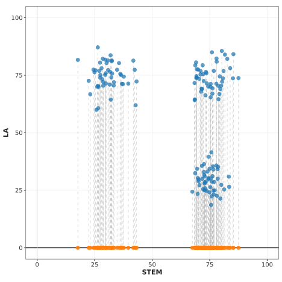
那么我们怎么办呢？诶！其实我们非常容易想到，我们把它投影到一条斜线上就行了：
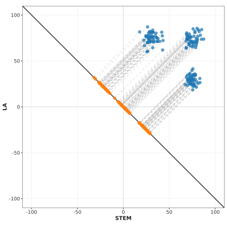
注意！这里为了展示 $y = -x$ 将坐标系延长到了 $[-100,100]$，在实际分析中，我们会把它们中心化，这样就不会有这么多空白空间了，如下图。
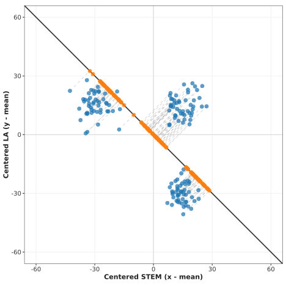
这样我们原本的三群信息还是保留了下来，也达到了我们降维的目的！
注意：例-1 我们得到了分群信息和群意义，例-2 我们仔细想一下，溯源到降维过程，我们也可以得到分群信息和意义。但是实际上，我们在高维降维分析中，我们是只需要得到它们在低维下的关系信息就可以啦（例如分群信息）！而关系或群的本身意义（理科生/文科生/优等生）并不是我们要得到的信息，对于降维后的关系意义，我们是通过后续研究进行意义调查的。总结为一句话：我们降维只关心信息点之间的关系，而不考虑它们关系的意义！
这种斜线投影就是我们的 PCA 主成分分析，主成分就是把其他成分（维度）信息压缩为一个主成分（关键成分）。但是问题又来啦：以 例-2 为例，我们的直线怎么取才能保留最大的信息（分群信息）？
这样取肯定不行，它把理科生和文科生的原始分群信息给丢失掉了：
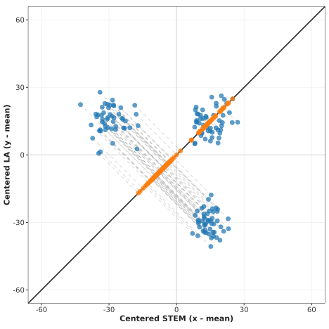
这样取才对，但是我们现在考虑的是我们用 k 和 b 去描述最优降维直线：
怎么去取呢？这就涉及到了 PCA 主成分分析的核心算法，理解他需要有一定的线性代数基础，我们后续再说（其实二维降一维和三维降二维的算法只需要高中数学几何知识就能自行推导出来，但是推广到 n 维就有点麻烦了）。我们现在需要知道的是，我们的二维原始信息通过二维 PCA 算法，总是能找到一条在数学上可以证明的最优直线，投影到这条直线上，我们能保留最多的原始数据点的关系信息。
你可能觉得 PCA 分析感觉没啥用啊：二维数据我通过观察和常识就能看出关系和分群信息，甚至三维数据我们也可以在空间坐标系中进行信息获取，离散型高维数据也可以通过仔细看看发现关系（离散到多个低维坐标系）。但是如果我们要进行连续高维数据的分析，通过常识看出分群信息，那么我们就必须通过降维了。三维空间的生物无法想象更高维度的空间，所以我们就把高维信息降维到低维进行观察。我们在几何上无法研究高维数据的分布特征，幸运的是，我们可以把二维降维到一维的 PCA 算法推广到高维降维上。
你可以把任意维度的数据降维到任意维度，作为三维生物，我们可以理解三维及以下的所有维度分布。一般出版物中，我们都更喜欢降维到二维上面！为什么不降维到一维？因为降维必然会丧失数据点关系，我们还是保留更多的关系信息比较好！为什么不降维到三维？因为我们一般是把结构打印到纸张上的，纸张不就是二维的嘛，我们也可以降维到三维，打印个模型出来也不是不行，在有些降维后不是特别复杂的情况下，你也可以降维到三维在二维纸面上呈现出来。
PCA 降维算法有局限性，例如这种二维数据原始分布降低到一维时，我们一定会丢失到二维的一个重要分群信息，对于高维也同理。这时候 PCA 就不行了，我们就要依赖其他数据降维算法！
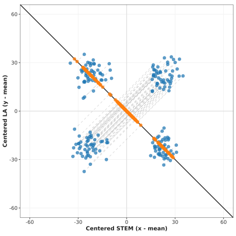
三维示例
在三维降维到二维中，这里进行一个可视化例子，其核心降维思想是一样的。假设我们的数据在三维分布中长这个样子：
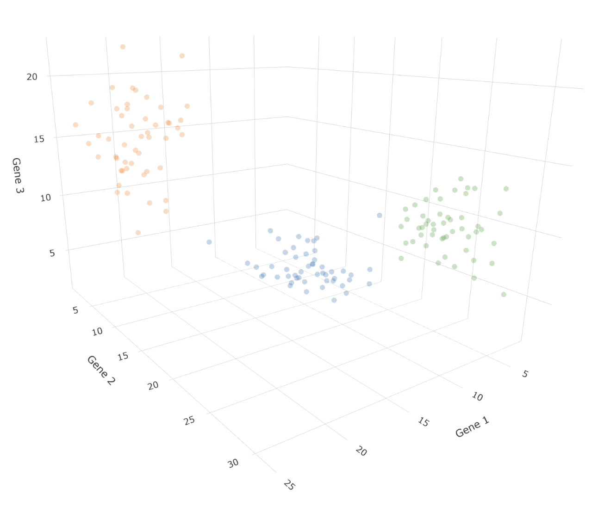
我们对其在二位上进行投影：
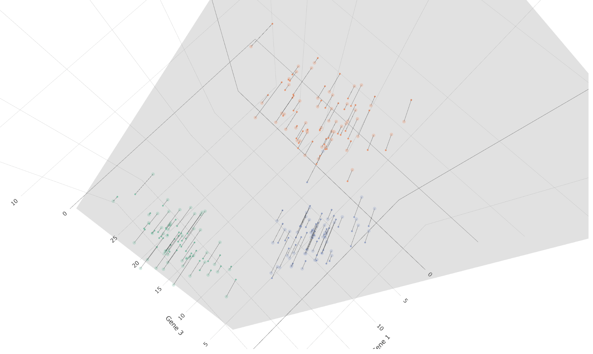
我们把平面单独拉出来：
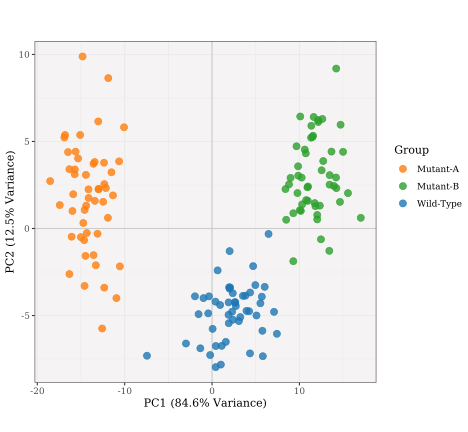
当然你也可以再次把它投影的一维上：
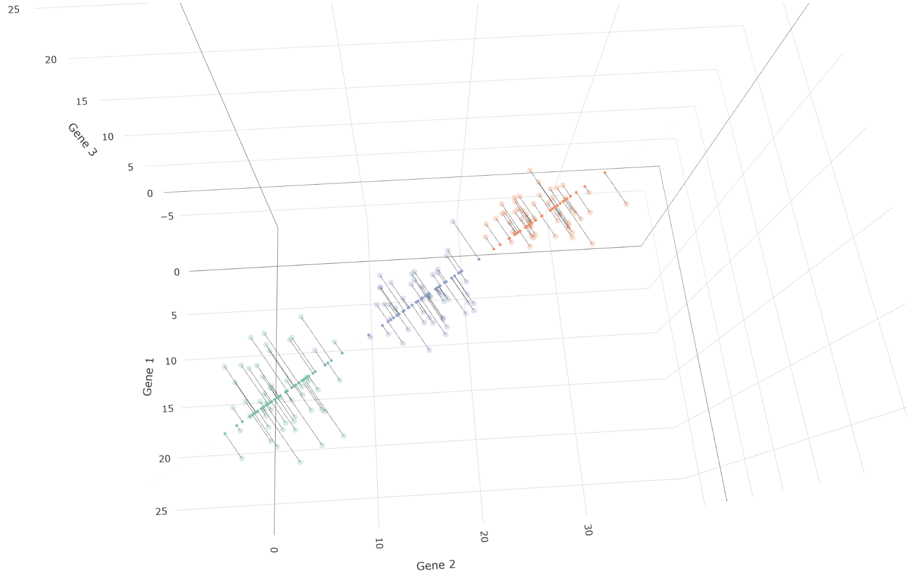
同样有很多数据集无法很好的利用 PCA：
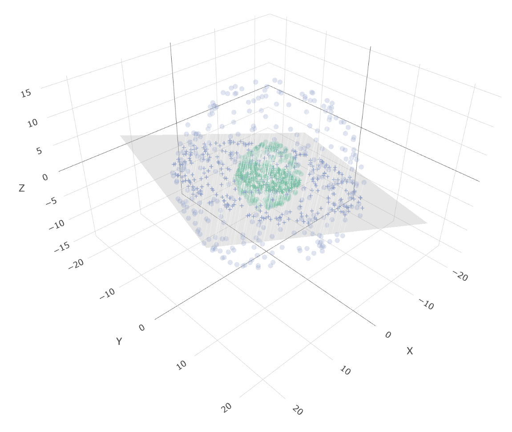
这些被做成了网页交互，你可以在这里面自己试试：
文章出现的各类数据集，绘图脚本你可以在这里访问到：